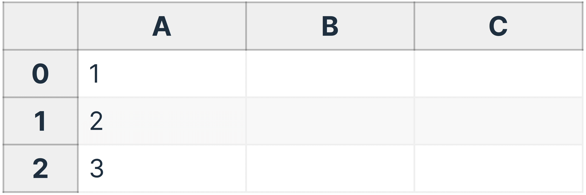

Reactivity

If you’ve used a spreadsheet, you already know what reactivity is.
The core idea of reactivity is that when a value changes, all dependent values are updated automatically.
 II
II
a:hover {
background: gold;
}
<a href="#">Come here</a>
<a href="#"
onmouseover="this.style.background = 'gold';"
>Come here</a>
<a href="#"
onmouseover="this.style.background = 'gold';"
onmouseout="this.style.background = '';"
>Come here</a>
<input type="number" id="input_a"> +
<input type="number" id="input_b"> =
<input type="number" id="input_c" disabled>
let a = 1, b = 2, c;
input_a.value = a;
input_b.value = b;
input_a.addEventListener("input", e => {
a = Number(input_a.value);
updateC();
});
input_b.addEventListener("input", e => {
b = Number(input_b.value);
updateC();
});
function updateC() {
c = a + b;
input_c.value = c;
}
updateC();
let a = 1, b = 2, c;
input_a.value = a;
input_b.value = b;
function render() {
a = Number(input_a.value);
b = Number(input_b.value);
c = a + b;
input_c.value = c;
}
render();
input_a.addEventListener("input", render);
input_b.addEventListener("input", render);
document.body.addEventListener("input", render);
<script>
let a = 1, b = 2, c;
$: c = a + b;
</script>
<input type="number" id="a" bind:value={a}> +
<input type="number" id="b" bind:value={b}> =
<input type="number" id="c" bind:value={c} disabled>
{
"id": "cuisine-of-nepal-san-francisco",
"name": "Cuisine of Nepal",
"image_url": ...,
"is_closed": false,
"url": ...,
"review_count": 303,
"categories": [...],
"rating": 4.5,
"coordinates": {...},
"transactions": [
"delivery",
"pickup",
"restaurant_reservation"
],
"price": "$$",
"location": {...},
"phone": "+14156472222",
"display_phone": "(415) 647-2222",
"distance": 2502.5961202999997,
"attributes": {
"gender_neutral_restrooms": true
},
"data": {
"reservation_openings": [
"13:30",
"13:45",
"14:00"
]
}
},
let response = await fetch("https://api.github.com/users/leaverou");
let json = await response.json();
// Do stuff with json
fetch("https://api.github.com/users/leaverou")
.then(response => response.json())
.then(json => {
// Do stuff with json
});
{#await}
{#await promise}
Loading…
{:then result}
Result was: { JSON.stringify(result) }
{:catch error}
Error: {error.message}
{/await}
Today’s menu: